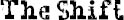

WHEN I WENT back to school the next day, the first thing I noticed was that there was a big shift in the way things were. A monumental shift. A seismic shift. Maybe even a cosmic shift. Whatever you want to call it, it was a big shift. Everyone—not just in our grade but every grade—had heard about what had happened to us with the seventh graders, so suddenly I wasn’t known for what I’d always been known for, but for this other thing that had happened. And the story of what happened had gotten bigger and bigger each time it was told. Two days later, the way the story went was that Amos had gotten into a major fistfight with the kid, and Miles and Henry and Jack had thrown some punches at the other guys, too. And the escape across the field became this whole long adventure through a cornfield maze and into the deep dark woods. Jack’s version of the story was probably the best because he’s so funny, but in whatever version of the story, and no matter who was telling it, two things always stayed the same: I got picked on because of my face and Jack defended me, and those guys—Amos, Henry, and Miles—protected me. And now that they’d protected me, I was different to them. It was like I was one of them. They all called me “little dude” now—even the jocks. These big dudes I barely even knew before would knuckle-punch me in the hallways now.
Another thing to come out of it was that Amos became super popular and Julian, because he missed the whole thing, was really out of the loop. Miles and Henry were hanging out with Amos all the time now, like they switched best friends. I’d like to be able to say that Julian started treating me better, too, but that wouldn’t be true. He still gave me dirty looks across the room. He still never talked to me or Jack. But he was the only one who was like that now. And me and Jack, we couldn’t care less.